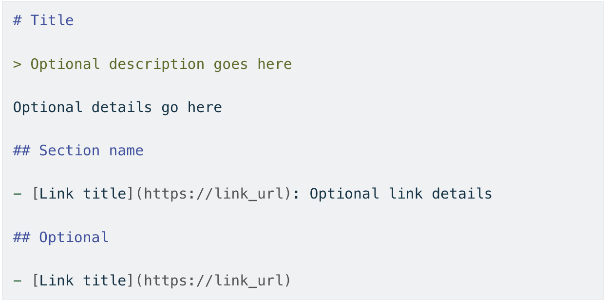

class: center, middle # Vibe Coding for Problem Solvers ## Translating intent to LLMs **By Lucas Soares** 08/05/2025 --- # About Me <div style="display: flex; align-items: center; justify-content: center; gap: 40px; margin: 40px 0;"> <div> <img src="../assets/profile_pic.png" width="250px" style="border-radius: 10px;"> </div> <div style="max-width: 400px;"> <h3>AI Engineer & Instructor</h3> <p style="font-size: 18px; margin: 15px 0;">Passionate about AI-augmented development</p> <p style="font-size: 18px; margin: 15px 0;">Building tools and teaching workflows</p> <p style="font-size: 18px; margin: 15px 0;">Focus on practical AI integration</p> </div> </div> --- # What You'll Learn <div style="display: grid; grid-template-columns: 1fr 1fr; gap: 30px; margin: 40px 0;"> <div style="background-color: #f0f8ff; padding: 25px; border-radius: 15px;"> <h3>🎯 Core Concepts</h3> <p>Define vibe coding and understand when to use it</p> </div> <div style="background-color: #f0fff0; padding: 25px; border-radius: 15px;"> <h3>🧠 Vibe Coding Core Skills</h3> <p>Practice translating ideas into AI instructions</p> </div> </div> <div style="display: grid; grid-template-columns: 1fr 1fr; gap: 30px;"> <div style="background-color: #fff8f0; padding: 25px; border-radius: 15px;"> <h3>🛠️ Tools & Patterns</h3> <p>Learn effective workflows and techniques</p> </div> <div style="background-color: #f8f0ff; padding: 25px; border-radius: 15px;"> <h3>🚀 Real Practice</h3> <p>Hands-on exercises and case studies</p> </div> </div> --- class: center, middle # What is Vibe Coding? --- <div style="display: flex; justify-content: center;"> <img src="../assets/andrej-tweet-vb-cd.png" width="600px"> </div> --- # ⚠️ CRITICAL DISTINCTION <div style="display: flex; justify-content: center; margin: 40px 0;"> <div style="border: 3px solid #e74c3c; padding: 25px; border-radius: 15px; background-color: #fee; max-width: 700px;"> <h2 style="color: #e74c3c; text-align: center;">Vibe Coding ≠ AI-Assisted Programming</h2> <p style="font-size: 18px; text-align: center;"><strong>Simon Willison (March 2025):</strong></p> <p style="font-size: 16px; font-style: italic;">"I'm concerned that people are applying the term 'vibe coding' to ALL forms of code written with AI assistance. This dilutes the term and gives a false impression of responsible AI-assisted programming."</p> </div> </div> --- # Vibe Coding x AI-Assisted Programming <div style="display: grid; grid-template-columns: 1fr auto 1fr; gap: 30px; align-items: center; margin: 40px 0;"> <div style="border: 2px solid #e74c3c; padding: 25px; border-radius: 15px; background-color: #fee; text-align: center;"> <h3>🧪 Vibe Coding</h3> <p style="font-size: 18px;"><strong>"Building software with an LLM without reviewing the code it writes"</strong></p> <p><em>- Simon Willison, 2025</em></p> </div> <div style="font-size: 48px; color: #666;">≠</div> <div style="border: 2px solid #27ae60; padding: 25px; border-radius: 15px; background-color: #e8f5e8; text-align: center;"> <h3>🤖 AI-Assisted Programming</h3> <p style="font-size: 18px;"><strong>Review, understand, and take accountability</strong></p> <p><em>Using AI as a typing assistant</em></p> </div> </div> --- # When Vibe Coding is Appropriate <div style="display: flex; justify-content: center; gap: 40px; margin: 40px 0;"> <!-- Safe Vibe Coding Zone --> <div style="background-color: #f8f9fa; padding: 25px; border-radius: 15px; max-width: 400px; flex: 1;"> <h3 style="text-align: center;">✅ Safe Vibe Coding Zone</h3> <div style="margin-top: 20px;"> <p>✓ <strong>Throwaway weekend projects</strong></p> <p>✓ <strong>Low-stakes experiments</strong></p> <p>✓ <strong>Learning and building intuition</strong></p> <p>✓ <strong>One-off data processing scripts</strong></p> <p>✓ <strong>Personal prototypes</strong></p> </div> </div> <!-- NOT for Production --> <div style="background-color: #fee; padding: 25px; border-radius: 15px; max-width: 400px; border: 2px solid #e74c3c; flex: 1;"> <h3 style="text-align: center; color: #e74c3c;">❌ NOT for Production</h3> <div style="margin-top: 20px;"> <p>✗ Complex, long-term systems</p> <p>✗ Security-critical applications</p> <p>✗ Code that others must maintain</p> <p>✗ High-stakes business logic</p> </div> </div> </div> --- class: center, middle # 💡 The Middle Ground --- class: center, middle <h1> <span style="background-color: lightgreen"> Whiteboard - The Spectrum of AI-Augmented Development - Useful Definitions & Tools </span> </h1> --- # Trade-offs and Characteristics <div style="display: flex; justify-content: center; align-items: flex-start; gap: 40px; min-height: 340px;"> <!-- Vibe Coding --> <div style="flex: 0 0 250px; text-align: center;"> <h3 style="margin-bottom: 16px;">Vibe Coding</h3> <ul style="color: #e74c3c; text-align: left; display: inline-block; margin: 0 auto;"> <li>↓ Less systematicity</li> <li>↓ Less precision</li> <li>↓ Less review</li> <li>↓ Less understanding</li> <li>↓ Less control</li> <li>↑ <strong>Maximum speed</strong></li> </ul> </div> <!-- AI-Assisted Programming --> <div style="flex: 0 0 300px; text-align: center;"> <h3 style="margin-bottom: 16px;">AI-Assisted Programming</h3> <ul style="color: #f39c12; text-align: left; display: inline-block; margin: 0 auto;"> <li>○ Balanced systematicity</li> <li>○ Balanced precision</li> <li>○ Strategic review</li> <li>○ Guided understanding</li> <li>○ Shared control</li> <li>○ <strong>True augmentation</strong></li> </ul> </div> <!-- Software Engineering --> <div style="flex: 0 0 350px; text-align: center;"> <h3 style="margin-bottom: 16px;">Software Engineering</h3> <ul style="color: #27ae60; text-align: left; display: inline-block; margin: 0 auto;"> <li>↑ More systematicity</li> <li>↑ More precision</li> <li>↑ More review</li> <li>↑ More understanding</li> <li>↑ More control</li> <li>↓ <strong>Slower process</strong></li> </ul> </div> </div> --- class: center, middle # The Vibe Coding Ecosystem --- class: center, middle <div style="display: flex; justify-content: center;"> <img src="../assets/coding-tools-survey.png" width="800px"> </div> --- ### Tool Categories by Use Case <div style="display: grid; grid-template-columns: 1fr 1fr; gap: 30px;"> <div> <h4>🎨 Web Builders</h4> <div style="background-color: #f8f9fa; padding: 15px; border-radius: 8px;"> <p><strong>Claude (artifacts)</strong> - $20/month<br> <p><strong>ChatGPT (canvas)</strong> - $20/month<br> <p><strong>Gemini (canvas)</strong> - $20/month<br> Safe sandbox prototyping</p> <p><strong>Vercel v0</strong> - $20/month<br> <p><strong>Lovable</strong> - $25/month<br> React + production deployment</p> </div> </div> <div> <h4>💻 IDE Integration</h4> <div style="background-color: #f8f9fa; padding: 15px; border-radius: 8px;"> <p><strong>Cursor</strong> - $20/month<br> Full codebase understanding</p> <p><strong>GitHub Copilot</strong> - $10/month<br> Code completion workflows</p> <p><strong>Codium Windsurf</strong> - $50 - $250/month<br> </div> </div> </div> --- # Tool Landscape (Continued) <div style="display: grid; grid-template-columns: 1fr 1fr; gap: 30px;"> <div> <h4>⚡ Terminal Agents</h4> <div style="background-color: #f8f9fa; padding: 15px; border-radius: 8px;"> <p><strong>Claude Code</strong> - Max Plan: $17 - $200/month<br> Mobile coding, file access</p> <p><strong>Aider</strong> - API costs only<br> Git integration, autonomous</p> </div> </div> <div> <h4>☁️ Cloud Environments</h4> <div style="background-color: #f8f9fa; padding: 15px; border-radius: 8px;"> <p><strong>Replit</strong> - $7-25/month<br> Full dev environment</p> <p><strong>CodeSandbox</strong> - Free-$20/month<br> Instant web development</p> </div> </div> </div> <!-- Visual: Tool comparison matrix showing features vs price --> --- class: center, middle # 7 Skills → 12 Concrete Patterns --- # Vibe Coding Skills <div style="display: grid; grid-template-columns: 1fr 1fr; gap: 30px;"> <div style="border: 2px solid #27ae60; padding: 20px; border-radius: 15px; background-color: #e8f5e8;"> <h3>✅ Basic</h3> <div style="margin-top: 15px;"> <p><strong>1. Prompting</strong></p> <p><strong>2. Context Management</strong></p> <p><strong>3. Capability Assigment</strong></p> <p><strong>4. Vibe Checking</strong></p> </div> </div> <div style="border: 2px solid #3498db; padding: 20px; border-radius: 15px; background-color: #f0f8ff;"> <h3>🆕 Advanced</h3> <div style="margin-top: 15px;"> <p><strong>5. Strategic Cognitive Offloading</strong></p> <p><strong>6. Personal Benchmarking</strong></p> <p><strong>7. Agentic Task Orchestration</strong></p> </div> </div> </div> --- class: center, middle <h1> <span style="background-color: lightgreen"> Demo: Exemplifying the 7 Skills </span> </h1> --- class: center, middle # Q&A & Break --- # Skills 1-4: The Foundation <div style="display: grid; grid-template-columns: 1fr 1fr; gap: 15px; font-size: 16px;"> <div style="background-color: #e8f4fd; padding: 15px; border-radius: 8px;"> <h4>1️⃣ Prompting</h4> <p> <span style="color: red;">Bad:</span> "How do I market my app?"<br> <span style="color: green;">Good:</span> "List 3 user personas for my app and suggest a marketing channel for each." </p> </div> <div style="background-color: #fff3cd; padding: 15px; border-radius: 8px;"> <h4>2️⃣ Context Management</h4> <p>30-page report + [prompt for dashboard app] + [language docs] → dashboard app</p> </div> <div style="background-color: #d4edda; padding: 15px; border-radius: 8px;"> <h4>3️⃣ Capability Assignment</h4> <p>"Let the LLM write the code, but I’ll review and test it myself."</p> </div> <div style="background-color: #f8d7da; padding: 15px; border-radius: 8px;"> <h4>4️⃣ Vibe Checking</h4> <p>"Does this answer feel right? If not, ask for clarification or a different approach."</p> </div> </div> --- # Skills 5-7: Advanced Techniques <div style="background-color: #e7e7ff; padding: 15px; border-radius: 8px; margin-top: 15px;"> <h4>5️⃣ Strategic Cognitive Offloading</h4> <p>"Summarize these meeting notes while I focus on the next task."</p> </div> <div style="background-color: #f0fff4; padding: 15px; border-radius: 8px; margin-top: 15px;"> <h4>6️⃣ Personal Benchmarking</h4> <p>"How does my solution compare to best practices or previous attempts?"</p> </div> <div style="background-color: #fff8e1; padding: 15px; border-radius: 8px; margin-top: 15px;"> <h4>7️⃣ Agentic Task Orchestration</h4> <p>"Break this project into subtasks and assign each to the right AI tool or agent."</p> </div> --- class: center, middle # Deep Dive into the 7 Vibe Coding Skills --- class: center, middle # Skill 1: Prompting ## The Foundation of Vibe Coding --- class: center, middle <div style="display: flex; justify-content: center; margin: 40px 0;"> <div style="border: 2px solid #3498db; padding: 25px; border-radius: 15px; background-color: #f0f8ff; max-width: 700px;"> <h3>🎯 The Core Insight</h3> <p style="font-size: 18px;">"The quality of your prompts directly determines the quality of your code"</p> <p><em>Better prompts = Better vibes = Better results</em></p> </div> </div> --- # The 6 Prompting Sub-Skills <div style="display: grid; grid-template-columns: 1fr 1fr 1fr; gap: 20px;"> <div style="background-color: #e8f4fd; padding: 15px; border-radius: 8px; text-align: center;"> <h4>1️⃣ Clear & Direct</h4> <p>Specific, unambiguous instructions</p> </div> <div style="background-color: #fff3cd; padding: 15px; border-radius: 8px; text-align: center;"> <h4>2️⃣ Decomposition</h4> <p>Break complex tasks into steps</p> </div> <div style="background-color: #d4edda; padding: 15px; border-radius: 8px; text-align: center;"> <h4>3️⃣ Examples</h4> <p>Show desired output format</p> </div> </div> <div style="display: grid; grid-template-columns: 1fr 1fr 1fr; gap: 20px; margin-top: 20px;"> <div style="background-color: #f8d7da; padding: 15px; border-radius: 8px; text-align: center;"> <h4>4️⃣ Role Assignment</h4> <p>Define AI's expertise context</p> </div> <div style="background-color: #e7e7ff; padding: 15px; border-radius: 8px; text-align: center;"> <h4>5️⃣ Time to Think</h4> <p>Request reasoning process</p> </div> <div style="background-color: #f0fff4; padding: 15px; border-radius: 8px; text-align: center;"> <h4>6️⃣ Output Constraints</h4> <p>Specify format and limits</p> </div> </div> --- # Bad vs Good: Clear & Direct Prompts <div style="display: flex; justify-content: space-around; margin: 40px 0;"> <div style="background-color: #fee; padding: 25px; border-radius: 10px; flex: 1; margin-right: 20px; border: 2px solid #e74c3c;"> <h3>❌ Vague & Indirect</h3> <p style="font-style: italic; background-color: white; padding: 10px; border-radius: 5px;">"Can you help me with my code?"</p> <p><strong>Problems:</strong> No context, no specific task, no guidance</p> </div> <div style="background-color: #e8f5e8; padding: 25px; border-radius: 10px; flex: 1; border: 2px solid #27ae60;"> <h3>✅ Clear & Direct</h3> <p style="font-style: italic; background-color: white; padding: 10px; border-radius: 5px;">"Write a Python function that validates email addresses using regex, returns True/False, and includes error handling"</p> <p><strong>Why it works:</strong> Specific language, clear output, defined requirements</p> </div> </div> --- # Decomposition: Breaking Down Complex Tasks <div style="margin: 20px 0;"> <h3>🧩 Instead of one massive prompt...</h3> <div style="background-color: #fee; border-radius: 8px; border: 2px solid #e74c3c;"> <p style="font-style: italic;">"Build me a complete e-commerce website with user authentication, product catalog, shopping cart, payment processing, and admin dashboard"</p> </div> -- <h3 style="margin-top: 30px;">🎯 Break it into digestible steps:</h3> <div style="background-color: #e8f5e8; padding: 20px; border-radius: 8px; border: 2px solid #27ae60;"> <ol> <li><strong>Step 1:</strong> "Design the database schema for users, products, and orders"</li> <li><strong>Step 2:</strong> "Create user authentication endpoints"</li> <li><strong>Step 3:</strong> "Build product catalog with search functionality"</li> <li><strong>Step 4:</strong> "Implement shopping cart logic"</li> </ol> </div> </div> --- # Examples: Show, Don't Just Tell <div style="display: flex; justify-content: center; margin: 40px 0;"> <div style="background-color: #f0f8ff; padding: 25px; border-radius: 15px; max-width: 700px;"> <h3>💡 The Power of Examples</h3> <p><strong>Before:</strong> "Write a React component"</p> -- <p><strong>After:</strong> "Write a React component like this structure:"</p> <pre style="background-color: #f8f9fa; padding: 15px; border-radius: 5px; font-size: 14px;"> const MyComponent = ({ data }) => { return ( <div className="container"> {data.map(item => ( <span key={item.id}>{item.name}</span> ))} </div> ); };</pre> </div> </div> --- # Role Assignment: Context is King <div style="display: grid; grid-template-columns: 1fr 1fr; gap: 30px;"> <div style="background-color: #fff3cd; padding: 20px; border-radius: 10px;"> <h3>🎭 Set the Stage</h3> <p style="font-style: italic; background-color: white; padding: 10px; border-radius: 5px;">"Act as a senior Python developer with 10 years of experience in web APIs. Review this code and suggest improvements..."</p> </div> <div style="background-color: #f0fff4; padding: 20px; border-radius: 10px;"> <h3>🏗️ Domain Expertise</h3> <p style="font-style: italic; background-color: white; padding: 10px; border-radius: 5px;">"You're a database architect. Design an efficient schema for a social media platform with users, posts, and relationships..."</p> </div> </div> --- class: center, middle <div style="display: flex; justify-content: center; margin: 30px 0;"> <div style="background-color: #e7e7ff; padding: 20px; border-radius: 10px; max-width: 600px;"> <h3>🎯 Why This Works</h3> <p>Role assignment tells the AI which subset of knowledge to draw from, resulting in more specialized and accurate responses</p> </div> </div> --- # Time to Think: Chain of Thought <div style="margin: 40px 0;"> <h3>🧠 Use Reasoning Models for Complex Tasks</h3> <div style="background-color: #e8f4fd; padding: 20px; border-radius: 8px;"> <p><strong>Technique:</strong> "Before writing the code, walk me through your approach..."</p> <p><strong>Or:</strong> "Think step by step about how to solve this problem..."</p> <p><strong>Or:</strong> "Let's break this down: What are the main components we need?"</p> </div> --- # Output Constraints: Be Specific About Format <div style="display: grid; grid-template-columns: 1fr 1fr; gap: 25px;"> <div style="background-color: #fff8f0; padding: 20px; border-radius: 10px;"> <h3>📏 Length & Structure</h3> <p>"Write a Python function that is max 15 lines, uses type hints, and follows PEP 8"</p> <p>"Generate exactly 3 alternative solutions"</p> </div> <div style="background-color: #f8f4ff; padding: 20px; border-radius: 10px;"> <h3>🎨 Style & Format</h3> <p>"Return only the code, no explanations"</p> <p>"Include detailed comments for each step"</p> <p>"Format as a markdown code block"</p> </div> </div> --- class: center, middle <div style="display: flex; justify-content: center; margin: 30px 0;"> <div style="background-color: #f0f8ff; padding: 25px; border-radius: 15px; max-width: 700px;"> <h3>🎯 Vibe Coding Power Move</h3> <p><strong>Constraint + Context:</strong> "Generate a complete HTML page with inline CSS and JavaScript. No external dependencies. Mobile-first responsive design. File should be under 500 lines total."</p> </div> </div> --- # Real Vibe Coding Prompts in Action <div style="margin: 40px 0;"> <h3>📱 Simon Willison's Open Sauce App Prompts</h3> <div style="background-color: #e8f4fd; padding: 20px; border-radius: 8px; margin: 15px 0;"> <h4>For OpenAI Codex (Autonomous Task):</h4> <p style="font-style: italic; background-color: white; padding: 10px; border-radius: 5px; font-size: 14px;">"Install playwright and use it to visit https://opensauce.com/agenda/ and grab the full details of all three day schedules from the tabs - Friday and Saturday and Sunday - then save data in as much detail as possible in a JSON file and submit that as a PR"</p> </div> -- <div style="background-color: #fff3cd; padding: 20px; border-radius: 8px; margin: 15px 0;"> <h4>For Claude (Iterative Building):</h4> <p style="font-style: italic; background-color: white; padding: 10px; border-radius: 5px; font-size: 14px;">"Build an artifact with no react that turns the schedule into a nice mobile friendly webpage - there are three days Friday, Saturday and Sunday. Don't copy the raw JSON over - fetch from this URL instead. Also include a button to download ICS at the top."</p> </div> </div> <p style="font-size: 14px; margin-top: 20px;"> <a href='https://simonwillison.net/2025/Jul/17/vibe-scraping/'>Vibe scraping and vibe coding a schedule app for Open Sauce 2025 entirely on my phone</a> </p> --- # The Prompting Hierarchy for Vibe Coding <div style="display: flex; justify-content: center; margin: 40px 0;"> <div style="max-width: 800px;"> <div style="background-color: #27ae60; color: white; padding: 10px; text-align: center; border-radius: 8px 8px 0 0;"> <strong>🏆 Expert Level: Combine All 6 Techniques</strong> </div> <div style="background-color: #f39c12; color: white; padding: 10px; text-align: center;"> <strong>🎯 Intermediate: Use 3-4 Techniques per Prompt</strong> </div> <div style="background-color: #e74c3c; color: white; padding: 10px; text-align: center; border-radius: 0 0 8px 8px;"> <strong>🚀 Beginner: Start with Clear & Direct + Examples</strong> </div> </div> </div> -- <div style="display: flex; justify-content: center; margin: 30px 0;"> <div style="background-color: #f8f9fa; padding: 25px; border-radius: 15px; max-width: 700px;"> <h3>💡 Pro Tip</h3> <p><strong>If your first prompt doesn't work:</strong> Ask the AI to help improve your prompt! Meta-prompting is a legitimate strategy.</p> <p style="font-style: italic;">"The previous response wasn't quite what I needed. Help me refine my prompt to get better results."</p> </div> </div> --- class: center, middle # Skill 2: Context Management ## Feeding Context to LLMs --- class: center, middle <div style="display: flex; justify-content: center; margin: 40px 0;"> <div style="border: 2px solid #f39c12; padding: 25px; border-radius: 15px; background-color: #fff8e1; max-width: 700px;"> <h3>🧠 Context Engineering</h3> <p style="font-size: 18px;">Filling the context window with <strong>just the right information</strong></p> <p><em>The quality of output is proportional to context quality</em></p> </div> </div> --- # The 4 Core Context Strategies <div style="display: grid; grid-template-columns: 1fr 1fr; gap: 25px; margin: 40px 0;"> <div style="background-color: #e8f4fd; padding: 8px; border-radius: 10px; border-left: 4px solid #3498db;"> <h4>📝 Write Context</h4> <p>Save information outside the context window</p> <p><em>Example: External memory systems, documentation files</em></p> </div> <div style="background-color: #fff3cd; padding: 8px; border-radius: 10px; border-left: 4px solid #f39c12;"> <h4>🎯 Select Context</h4> <p>Pull relevant information when needed</p> <p><em>Example: RAG systems, smart file selection</em></p> </div> </div> <div style="display: grid; grid-template-columns: 1fr 1fr; gap: 25px;"> <div style="background-color: #d4edda; padding: 8px; border-radius: 10px; border-left: 4px solid #27ae60;"> <h4>🗜️ Compress Context</h4> <p>Retain only essential tokens through summarization</p> <p><em>Example: Checkpoint summaries, sliding windows</em></p> </div> <div style="background-color: #f8d7da; padding: 8px; border-radius: 10px; border-left: 4px solid #e74c3c;"> <h4>🏗️ Isolate Context</h4> <p>Split context across different agents</p> <p><em>Example: Multi-agent architectures, specialized contexts</em></p> </div> </div> <p style="font-size: 12px; margin-top: 0px; margin-left: 0px"> <a href='https://blog.langchain.com/context-engineering-for-agents/'>LangChain Blog Post - Context Engineering</a> </p> --- # LLMs.txt - Input to LLM Ready  <p style="font-size: 14px; margin-left: 0px"> <a href='https://llmstxt.org/'>Source: llms-txt</a> </p> --- <div style="display: grid; grid-template-columns: 1fr 1fr; gap: 25px; margin: 40px 0;"> <div style="background-color: #e8f4fd; padding: 20px; border-radius: 10px;"> <h4>📄 Repository to Context</h4> <p><strong><a href="https://gitingest.com">gitingest.com</a></strong> - Turn any GitHub repo into LLM-ready context</p> <p><strong><a href="https://github.com/yamadashy/repomix">repomix</a></strong> - Pack entire repository contents into a single file</p> <p><strong><a href="https://github.com/simonw/files-to-promp t">files-to-prompt</a></strong> - CLI tool to concatenate files for LLM prompts</p> <p><strong><a href="https://repoprompt.com/">Repo Prompt</a></strong> - Generate prompts from repository structure</p> </div> <div style="background-color: #fff3cd; padding: 20px; border-radius: 10px;"> <h4>🔍 Specialized Extractors</h4> <p><strong><a href="https://gitdiagram.com">gitdiagram.com</a></strong> - Visualize and extract repo architecture</p> <p><strong><a href="https://r.jina.ai">r.jina.ai</a></strong> - Reader API for clean web content extraction</p> <p><strong><a href="https://www.arxiv-txt.org">arxiv-txt</a></strong> - Convert arXiv papers to clean text</p> </div> </div> --- # Vibe Coding Context Patterns <div style="display: flex; gap: 30px; margin-top: 20px; align-items: flex-start; flex-wrap: wrap;"> <div style="flex: 1 1 320px; min-width: 280px;"> <h4>✅ Effective Context Loading:</h4> <div style="background-color: #e8f5e8; padding: 15px; border-radius: 8px; border-left: 4px solid #27ae60;"> <p><strong>Error messages + logs</strong> - Full error traces when debugging</p> <p><strong>API documentation</strong> - Relevant sections for current task</p> <p><strong>Test outputs</strong> - Results when tests fail</p> <p><strong>Conversation history</strong> - Key decisions and context</p> </div> </div> <div style="flex: 1 1 320px; min-width: 280px;"> <h4>❌ Context Pollution:</h4> <div style="background-color: #fee; padding: 15px; border-radius: 8px; border-left: 4px solid #e74c3c;"> <p>Including irrelevant files or outdated information</p> <p>Letting context "rot" with conflicting information</p> <p>Overwhelming context window with noise</p> </div> </div> </div> --- # Memory Management Strategies <div style="display: grid; grid-template-columns: 1fr 1fr; gap: 25px; margin: 40px 0;"> <div style="background-color: #f0f8ff; padding: 20px; border-radius: 10px;"> <h4>🔄 Sliding Window Technique</h4> <p>Process text in overlapping segments:</p> <p style="font-family: 'Ubuntu Mono'; background-color: #f8f8f8; padding: 8px; border-radius: 4px;"> Segment 1: tokens 1-1000<br> Segment 2: tokens 501-1500<br> Segment 3: tokens 1001-2000 </p> </div> <div style="background-color: #f0fff0; padding: 20px; border-radius: 10px;"> <h4>📋 Checkpoint Summaries</h4> <p>Regular summaries of current state:</p> <p><em>"What's been accomplished + current state"</em></p> <p>Use as seeds for fresh context in new sessions</p> </div> </div> --- # Context Refresh Anti-Pattern <div style="display: flex; justify-content: center; margin: 40px 0;"> <div style="border: 2px solid #e74c3c; padding: 25px; border-radius: 15px; background-color: #fee; max-width: 700px;"> <h3>⚠️ Context Rot Prevention</h3> <p><strong>Problem:</strong> Long conversations accumulate outdated/conflicting information</p> <p><strong>Solution:</strong> Strategic context restart</p> <p>1. Create summary of current state</p> <p>2. Start fresh conversation</p> <p>3. Load only relevant context</p> <p><strong>Golden Rule:</strong> When in doubt, restart with clean context</p> </div> </div> --- class: center, middle # Skill 3: Capability Assignment ## Know What and How to Delegate --- class: center, middle <div style="display: flex; justify-content: center; margin: 40px 0;"> <div style="border: 2px solid #27ae60; padding: 25px; border-radius: 15px; background-color: #e8f5e8; max-width: 700px;"> <h3>🎯 Problem / Tool / Task</h3> <p style="font-size: 18px;">Strategically dividing work between <strong>human and AI</strong></p> <p><em>Problem Awareness + Platform Awareness + Task Delegation</em></p> <a href='https://www.anthropic.com/ai-fluency/ai-fluency-delegation'>Anthropic - AI Fluency Delegation</a> </div> </div> --- # Model Selection Framework <div style="margin: 20px 0;"> <h4>📅 Knowledge Cutoffs (2024-2025):</h4> <div style="background-color: #f8f9fa; padding: 20px; border-radius: 10px;"> <div style="display: grid; grid-template-columns: 1fr 1fr 1fr; gap: 15px;"> <div> <strong>GPT-4.1:</strong><br> <span style="color: #e74c3c;">June 2024</span><br> </div> <div> <strong>Claude 4 Sonnet:</strong><br> <span style="color: #f39c12;">January 2025</span><br> </div> <div> <strong>Gemini 2.5 Pro:</strong><br> <span style="color: #27ae60;">January 2025</span><br> </div> </div> </div> </div> -- ## What Model is Good For What? <div style="margin: 20px 0;"> <h4>🏆 Use Leaderboards to Guide Model Choice</h4> <div style="background-color: #f0f8ff; padding: 5px; border-radius: 8px; border-left: 4px solid #3498db;"> <ul> <li> <a href="https://web.lmarena.ai/leaderboard" target="_blank" style="color: #3498db; text-decoration: underline;"> LM Arena Leaderboard </a> – Community-driven, multi-metric LLM rankings </li> <li> <a href="https://artificialanalysis.ai/" target="_blank" style="color: #3498db; text-decoration: underline;"> Artificial Analysis </a> – Up-to-date model comparisons and benchmarks </li> <li> <a href="https://lmarena.ai/leaderboard?utm_campaign=hf_banner" target="_blank" style="color: #3498db; text-decoration: underline;"> LM Arena Leaderboard </a> – Community-driven, multi-metric LLM rankings </li> </ul> <p> <em>Check these resources before choosing a model for your task—what was "best" last month may not be best today!</em> </p> </div> </div> --- # Understanding Tool Limitations <div style="margin: 20px 0;"> <h4>⚠️ Critical Limitations to Remember:</h4> <div style="background-color: #fee; padding: 15px; border-radius: 8px; border-left: 4px solid #e74c3c;"> <p><strong>Hallucination:</strong> May generate non-existent APIs or libraries</p> <p><strong>Security blind spots:</strong> May introduce vulnerabilities</p> <p><strong>Dependency risks:</strong> May suggest outdated or compromised packages</p> <p><strong>Context limits:</strong> Long conversations lose coherence</p> </div> </div> -- <div style="display: flex; justify-content: center; margin: 20px 0;"> <div style="background-color: #f8f9fa; padding: 20px; border-radius: 15px; max-width: 600px;"> <h4 style="text-align: center;">💡 Key Insight</h4> <p style="text-align: center;">Orchestrate the right combination for each task, context, and risk level, and build intuition for when to delegate and when to retain control.</p> </div> </div> --- class: center, middle # Skill 4: Vibe Checking ## Smart Verification Without Over-Engineering --- class: center, middle <div style="display: flex; justify-content: center; margin: 40px 0;"> <div style="border: 2px solid #e74c3c; padding: 25px; border-radius: 15px; background-color: #fee; max-width: 700px;"> <h3>🔍 The Core Concept</h3> <p style="font-size: 18px;">Lightweight verification that's <strong>simpler than the original task</strong></p> <p><em>Validate AI outputs without reverting to full code reviews</em></p> </div> </div> --- # What is Vibe Checking? <div style="display: grid; grid-template-columns: 1fr auto 1fr; gap: 20px; align-items: center; margin: 40px 0;"> <div style="background-color: #f0f8ff; padding: 20px; border-radius: 10px; border: 2px solid #3498db;"> <h4>Traditional QA</h4> <p>Comprehensive testing and code review</p> <p style="color: #e74c3c;">Too slow for vibe coding</p> </div> <span style="font-size: 48px; color: #666;">≠</span> <div style="background-color: #e8f5e8; padding: 20px; border-radius: 10px; border: 2px solid #27ae60;"> <h4>Vibe Checking</h4> <p>Strategic verification points</p> <p style="color: #27ae60;">Speed + confidence balance</p> </div> </div> -- <div style="display: flex; justify-content: center;"> <div style="background-color: #fff8e1; padding: 20px; border-radius: 15px; max-width: 600px; border: 2px solid #f39c12;"> <h4 style="text-align: center;">🎯 The Sweet Spot</h4> <p style="text-align: center;">Catch major issues while preserving development velocity</p> </div> </div> --- # Green Flags vs. Red Flags <div style="display: grid; grid-template-columns: 1fr 1fr; gap: 25px; margin: 40px 0;"> <div style="background-color: #e8f5e8; padding: 20px; border-radius: 10px; border-left: 4px solid #27ae60;"> <h4>✅ Green Flags (Good Signs)</h4> <p>• Output quantities match expectations</p> <p>• File sizes are reasonable</p> <p>• Basic functionality tests pass</p> <p>• Error-free execution of simple tests</p> <p>• Consistent formatting and structure</p> </div> <div style="background-color: #fee; padding: 20px; border-radius: 10px; border-left: 4px solid #e74c3c;"> <h4>❌ Red Flags (Warning Signs)</h4> <p>• Dramatic size discrepancies</p> <p>• Incomplete processing (missing files)</p> <p>• False positives/negatives</p> <p>• Context blindness</p> <p>• Over-formal, repetitive patterns</p> </div> </div> --- # When Vibe Checks Aren't Enough <div style="display: grid; grid-template-columns: 1fr 1fr; gap: 25px; margin: 40px 0;"> <div style="background-color: #e8f5e8; padding: 20px; border-radius: 10px; border-left: 4px solid #27ae60;"> <h4>✅ Vibe Checks Work For:</h4> <p>• Personal projects and prototypes</p> <p>• Data processing scripts</p> <p>• UI components and layouts</p> <p>• Learning and experimentation</p> <p>• Throwaway weekend projects</p> </div> <div style="background-color: #fee; padding: 20px; border-radius: 10px; border-left: 4px solid #e74c3c;"> <h4>❌ Full Review Required:</h4> <p>• Production security code</p> <p>• Financial calculations</p> <p>• User data handling</p> <p>• System integrations</p> <p>• Performance-critical paths</p> </div> </div> --- # Building Your Vibe Check Intuition <div style="margin: 20px 0;"> <h4>📈 Developing Your "Spidey Sense":</h4> <div style="background-color: #f0f8ff; padding: 15px; border-radius: 8px; border-left: 4px solid #3498db;"> <p><strong>Practice daily:</strong> Run vibe checks on every AI-generated solution</p> <p><strong>Track patterns:</strong> Note what types of issues you catch most often</p> <p><strong>False alarms:</strong> Learn when your instincts are overcautious</p> <p><strong>Near misses:</strong> Document issues that slipped through</p> </div> </div> -- <div style="display: flex; justify-content: center; margin: 20px 0;"> <div style="background-color: #f8f9fa; padding: 20px; border-radius: 15px; max-width: 600px;"> <h4 style="text-align: center;">💡 Key Insight</h4> <p style="text-align: center;">Vibe checking bridges the gap between reckless speed and paralyzed perfectionism</p> </div> </div> --- class: center, middle <h1> <span style="background-color: lightgreen"> Demo - Practicing Basic Vibe Coding Skills </span> </h1> --- class: center, middle # Q&A & Break --- class: center, middle # Skill 5: Strategic Cognitive Offloading ## Smart Mental Load Management --- class: center, middle <div style="display: flex; justify-content: center; margin: 40px 0;"> <div style="border: 2px solid #9b59b6; padding: 25px; border-radius: 15px; background-color: #f8f5ff; max-width: 700px;"> <h3>🧠 The Core Concept</h3> <p style="font-size: 18px;">Thoughtful delegation of cognitive tasks to AI while <strong>maintaining critical thinking</strong></p> <p><em>Reduce mental effort on routine tasks, amplify focus on high-value work</em></p> </div> </div> --- # Strategic vs. Non-Strategic Offloading <div style="display: grid; grid-template-columns: 1fr auto 1fr; gap: 25px; align-items: center; margin: 40px 0;"> <div style="background-color: #e8f5e8; padding: 20px; border-radius: 10px; border: 2px solid #27ae60;"> <h4>✅ Strategic (Beneficial)</h4> <p>• Using AI for boilerplate and prototyping</p> <p>• Leveraging AI for information retrieval</p> <p>• Maintaining regular "AI-free" practice</p> <p>• Critical evaluation of AI outputs</p> </div> <span style="font-size: 48px; color: #666;">≠</span> <div style="background-color: #fee; padding: 20px; border-radius: 10px; border: 2px solid #e74c3c;"> <h4>❌ Non-Strategic (Problematic)</h4> <p>• Complete problem-solving delegation</p> <p>• Over-reliance for debugging</p> <p>• Accepting code without comprehension</p> <p>• Using AI as learning replacement</p> </div> </div> --- # The 70-30 Rule <div style="display: flex; justify-content: center; margin: 40px 0;"> <div style="background-color: #fff8e1; padding: 20px; border-radius: 15px; max-width: 700px; border: 2px solid #f39c12;"> <h3>📊 Cognitive Load Distribution</h3> <div style="display: grid; grid-template-columns: 1fr 1fr; gap: 20px; margin-top: 20px;"> <div style="background-color: #3498db; color: white; padding: 15px; border-radius: 8px; text-align: center;"> <h4>70% AI-Assisted</h4> <p>Routine tasks, boilerplate, research</p> </div> <div style="background-color: #e74c3c; color: white; padding: 15px; border-radius: 8px; text-align: center;"> <h4>30% Independent</h4> <p>Core skills, critical thinking, design</p> </div> </div> </div> </div> -- <div style="display: flex; justify-content: center;"> <div style="background-color: #f0f8ff; border-radius: 15px; max-width: 600px;"> <h4 style="text-align: center;">💡 Key Insight</h4> <p style="text-align: center;">Reserve 30% of coding time for independent work to maintain skills</p> </div> </div> --- # What to Offload vs. What to Keep <div style="display: grid; grid-template-columns: 1fr 1fr; gap: 25px; margin: 40px 0;"> <div style="background-color: #e8f4fd; padding: 20px; border-radius: 10px; border-left: 4px solid #3498db;"> <h4>📤 Tasks Suitable for Offloading</h4> <p>• Boilerplate code generation</p> <p>• Documentation lookup and research</p> <p>• Code formatting and style consistency</p> <p>• Writing unit test scaffolding</p> <p>• Initial prototyping and iteration</p> </div> <div style="background-color: #fff3cd; padding: 20px; border-radius: 10px; border-left: 4px solid #f39c12;"> <h4>🧠 Keep Human-Controlled</h4> <p>• System architecture decisions</p> <p>• Complex debugging and root cause analysis</p> <p>• Code review and quality assessment</p> <p>• Learning new concepts and technologies</p> <p>• Critical thinking about trade-offs</p> </div> </div> --- # The Risks: Cognitive Skill Atrophy <div style="display: flex; justify-content: center; margin: 40px 0;"> <div style="border: 2px solid #e74c3c; padding: 25px; border-radius: 15px; background-color: #fee; max-width: 700px;"> <h3>⚠️ Research Findings</h3> <p><strong>Significant negative correlation</strong> between frequent AI tool usage and critical thinking abilities</p> <p><strong>Metacognitive laziness:</strong> Diminished self-regulatory processes</p> </div> </div> <p style="font-size: 14px; margin-top: 200px; margin-left: 0px"> <a href='https://www.media.mit.edu/publications/your-brain-on-chatgpt/'>Source: Your Brain on ChatGPT - MIT Media Lab</a> </p> --- # Benefits of Strategic Offloading <div style="margin: 20px 0;"> <div style="background-color: #e8f5e8; padding: 15px; border-radius: 8px; border-left: 4px solid #27ae60;"> <b>💪 Productivity Enhancement</b><p>Reduces time on repetitive tasks, allows focus on high-level architecture</p> </div> </div> -- <div style="margin: 20px 0;"> <div style="background-color: #f0f8ff; padding: 15px; border-radius: 8px; border-left: 4px solid #3498db;"> <b>🧘 Mental Health</b><p>Reduces cognitive overload and burnout by automating grunt work</p> </div> </div> -- <div style="margin: 20px 0;"> <div style="background-color: #fff8e1; padding: 5px; border-radius: 8px; border-left: 4px solid #f39c12;"> <b>🎯 Context Preservation</b><p>Eliminates time spent searching documentation and understanding legacy code</p> </div> </div> -- <div style="margin: 20px 0;"> <div style="background-color: #f8f5ff; padding: 5px; border-radius: 8px; border-left: 4px solid #9b59b6;"> <b>⚡ Accelerated Development</b><p>Ideas that once took days can be prototyped in hours</p> </div> </div> --- # Best Practices for Strategic Offloading <div style="margin: 20px 0;"> <h4>🎓 Use AI for Learning:</h4> <div style="background-color: #f8f9fa; padding: 15px; border-radius: 8px;"> <p>Ask follow-up questions to understand the reasoning behind AI suggestions</p> <p><strong>Approach:</strong> "Why did you choose this approach?" or "What are the trade-offs?"</p> </div> </div> -- <div style="margin: 20px 0;"> <h4>🏋️ Practice Deliberate Engagement:</h4> <div style="background-color: #f8f9fa; padding: 15px; border-radius: 8px;"> <p>Regularly solve problems without AI to maintain core skills</p> <p><strong>Schedule:</strong> Weekly "AI-free" coding sessions</p> </div> </div> --- # Practical Implementation Examples <div style="margin: 20px 0;"> <h4>✅ Good Strategic Offloading:</h4> <div style="background-color: #e8f5e8; padding: 15px; border-radius: 8px; border-left: 4px solid #27ae60;"> <p><strong>Test Scaffolding:</strong> AI generates test structure, you implement test logic</p> <p><strong>Architecture Design:</strong> AI explains different approaches, you choose and implement</p> <p><strong>Pair Programming:</strong> AI accelerates iteration while you maintain oversight</p> </div> </div> -- <div style="margin: 20px 0;"> <h4>❌ Poor Offloading Examples:</h4> <div style="background-color: #fee; padding: 15px; border-radius: 8px; border-left: 4px solid #e74c3c;"> <p><strong>Blind Copying:</strong> Copy-pasting AI solutions without understanding</p> <p><strong>Debug Dependency:</strong> Using AI to debug every error without learning</p> <p><strong>Architecture Delegation:</strong> Having AI make all design decisions</p> </div> </div> --- # Building Sustainable AI Habits <div style="display: grid; grid-template-columns: 1fr 1fr; gap: 25px; margin: 40px 0;"> <div style="background-color: #e8f4fd; padding: 10px; border-radius: 10px;"> <h4>📅 Daily Practices</h4> <p>• Start projects with AI assistance</p> <p>• Review and understand all generated code</p> <p>• Ask "why" to learn from AI</p> <p>• Maintain explanation ability</p> </div> <div style="background-color: #fff3cd; padding: 10px; border-radius: 10px;"> <h4>📅 Weekly Practices</h4> <p>• Solve one problem without AI</p> <p>• Review AI collaboration patterns</p> <p>• Practice core skills independently</p> <p>• Track progress</p> </div> </div> -- <div style="display: flex; justify-content: center; margin: 20px 0;"> <div style="background-color: #f8f9fa; padding: 20px; border-radius: 15px; max-width: 600px;"> <h4 style="text-align: center;">💡 Key Insight</h4> <p style="text-align: center;">Strategic cognitive offloading is about amplifying human intelligence, not replacing it</p> </div> </div> --- class: center, middle # Skill 6: Personal Benchmarking ## Measuring Your AI Collaboration Effectiveness --- class: center, middle <div style="display: flex; justify-content: center; margin: 40px 0;"> <div style="border: 2px solid #27ae60; padding: 25px; border-radius: 15px; background-color: #e8f5e8; max-width: 700px;"> <h3>📊 The Core Concept</h3> <p style="font-size: 18px;">Creating <strong>custom evaluation frameworks</strong> to track AI collaboration effectiveness</p> <p><em>Move beyond standardized benchmarks to measure your specific use cases</em></p> </div> </div> --- # Why Personal Benchmarking Matters <div style="margin: 20px 0;"> <h4>⚠️ The Productivity Paradox:</h4> <div style="background-color: #fee; padding: 15px; border-radius: 8px; border-left: 4px solid #e74c3c;"> <p>Recent research shows experienced developers may actually be <strong>19% slower</strong> with AI tools</p> <p>Despite feeling <strong>20% more productive</strong></p> </div> </div> -- <div style="margin: 20px 0;"> <h4>💡 The Solution:</h4> <div style="background-color: #e8f5e8; padding: 15px; border-radius: 8px; border-left: 4px solid #27ae60;"> <p>Objective measurement alongside subjective assessments</p> <p>Track both <em>how you feel</em> and <em>actual performance metrics</em></p> </div> </div> --- class: center, middle # The Multi-Dimensional Metrics Framework --- class: center, middle <div style="display: grid; grid-template-columns: 1fr 1fr; gap: 25px; margin: 40px 0;"> <div style="background-color: #e8f4fd; padding: 10px; border-radius: 10px; border-left: 4px solid #3498db;"> <h4>📈 Velocity Metrics</h4> <p>• Time to complete tasks</p> <p>• Feature delivery speed</p> <p>• Build/test cycle duration</p> <p>• Iteration frequency</p> </div> <div style="background-color: #fff3cd; padding: 10px; border-radius: 10px; border-left: 4px solid #f39c12;"> <h4>🎯 Quality Metrics</h4> <p>• Bug rates per lines of code</p> <p>• Code review outcomes</p> <p>• Post-deployment incidents</p> <p>• Technical debt accumulation</p> </div> </div> <div style="display: grid; grid-template-columns: 1fr 1fr; gap: 25px;"> <div style="background-color: #d4edda; padding: 10px; border-radius: 10px; border-left: 4px solid #27ae60;"> <h4>🤝 Collaboration Metrics</h4> <p>• Code sharing efficiency</p> <p>• Knowledge transfer rates</p> <p>• Pull request sizes</p> <p>• Team integration ease</p> </div> <div style="background-color: #f8d7da; padding: 10px; border-radius: 10px; border-left: 4px solid #e74c3c;"> <h4>😊 Satisfaction Metrics</h4> <p>• Developer confidence levels</p> <p>• Comfort with AI tools</p> <p>• Learning curve progress</p> <p>• Burnout indicators</p> </div> </div> --- class: center, middle # The Long-Term Goal: Skill Development Trajectory --- class: center, middle <div style="display: flex; justify-content: center; margin: 40px 0;"> <div style="border: 2px solid #e74c3c; padding: 25px; border-radius: 15px; background-color: #fee; max-width: 700px;"> <h3>🎯 Ultimate Success Metrics</h3> <p><strong>Speed:</strong> Can you ship projects you wouldn't have started before?</p> <p><strong>Confidence:</strong> Do you trust your vibe checks and AI collaboration?</p> <p><strong>Discernment:</strong> Can you distinguish appropriate vs inappropriate AI use?</p> <p><strong>Accountability:</strong> How much do you understand and own your code?</p> </div> </div> --- class: center, middle <div style="display: flex; justify-content: center; margin: 20px 0;"> <div style="background-color: #f8f9fa; padding: 20px; border-radius: 15px; max-width: 600px;"> <h4 style="text-align: center;">💡 Key Insight</h4> <p style="text-align: center;">Personal benchmarking reveals the difference between feeling productive and being productive</p> </div> </div> --- class: center, middle # Skill 7: Agentic Task Orchestration ## Coordinating AI Agent Clusters --- class: center, middle <div style="display: flex; justify-content: center; margin: 40px 0;"> <div style="border: 2px solid #9b59b6; padding: 25px; border-radius: 15px; background-color: #f8f5ff; max-width: 700px;"> <h3>🤖 The Core Concept</h3> <p style="font-size: 18px;">Coordinating <strong>multiple AI agents</strong> working together autonomously</p> <p><em>From individual coding to AI orchestration as a core developer skill</em></p> </div> </div> --- # What is Agentic Task Orchestration? <div style="display: grid; grid-template-columns: 1fr auto 1fr; gap: 25px; align-items: center; margin: 40px 0;"> <div style="background-color: #fff8e1; padding: 20px; border-radius: 10px; border: 2px solid #f39c12;"> <h4>Traditional AI-Assisted</h4> <p>Human-guided conversations</p> <p>Direct control over AI</p> <p>Single agent, immediate feedback</p> </div> <span style="font-size: 48px; color: #666;">→</span> <div style="background-color: #e8f5e8; padding: 20px; border-radius: 10px; border: 2px solid #27ae60;"> <h4>Agentic Orchestration</h4> <p>Autonomous agent coordination</p> <p>Strategic task delegation</p> <p>Multi-agent, parallel execution</p> </div> </div> -- <div style="display: flex; justify-content: center;"> <div style="background-color: #f0f8ff; padding: 20px; border-radius: 15px; max-width: 600px;"> <h4 style="text-align: center;">💡 The Shift</h4> <p style="text-align: center;">From writing code to orchestrating intelligent agent clusters</p> </div> </div> --- # The Orchestrator-Worker Pattern <div style="display: flex; justify-content: center; margin: 40px 0;"> <div style="background-color: #f8f9fa; padding: 25px; border-radius: 15px; max-width: 700px; border: 2px solid #3498db;"> <h3>🎯 Lead Agent (Orchestrator)</h3> <ul style="margin: 0 0 0 20px; padding: 0; list-style-type: disc; font-size: 18px;"> <li><strong>Analyzes</strong> complex tasks and develops strategies</li> <br> <li><strong>Breaks down</strong> work into parallelizable subtasks</li> <br> <li><strong>Spawns</strong> specialized subagents for different aspects</li> <br> <li><strong>Synthesizes</strong> results from multiple workers</li> <br> <li><strong>Maintains</strong> overall project coherence</li> </ul> </div> </div> --- # Claude Code for Orchestrating Agents <div style="margin: 20px 0;"> <div style="background-color: #e8f4fd; padding: 5px; border-radius: 8px; border-left: 4px solid #3498db;"> <h4>🎯 Core Philosophy:</h4> <p><strong>Intentionally low-level and unopinionated:</strong> Near-raw model access without forced workflows</p> <p><strong>Flexible and customizable:</strong> Developers create tailored orchestration patterns</p> </div> </div> -- <div style="margin: 20px 0;"> <div style="background-color: #fff3cd; padding: 5px; border-radius: 8px; border-left: 4px solid #f39c12;"> <h4>🤖 Advanced Capabilities:</h4> <p><strong>Parallel development:</strong> Frontend and backend simultaneously using Git worktrees</p> <p><strong>Multi-agent problem solving:</strong> Different agents approaching problems from multiple angles</p> <p><strong>Autonomous execution:</strong> for uninterrupted work</p> </div> </div> --- # When to Use Multi-Agent vs. Single-Agent <div style="display: grid; grid-template-columns: 1fr 1fr; gap: 25px; margin: 40px 0;"> <div style="background-color: #e8f5e8; padding: 20px; border-radius: 10px; border-left: 4px solid #27ae60;"> <h4>✅ Multi-Agent Orchestration</h4> <p><strong>Complex, parallelizable tasks:</strong> Multiple independent components</p> <p><strong>Large-scale refactoring:</strong> Changes across many files</p> <p><strong>Research-intensive projects:</strong> Multiple perspectives needed</p> <p><strong>High-value tasks:</strong> Improved performance justifies costs</p> </div> <div style="background-color: #fee; padding: 20px; border-radius: 10px; border-left: 4px solid #e74c3c;"> <h4>❌ Single-Agent Better For</h4> <p><strong>Tightly coupled tasks:</strong> Agents need shared context</p> <p><strong>Simple, linear workflows:</strong> Sequential without parallelization</p> <p><strong>Real-time coordination:</strong> Immediate agent communication needed</p> <p><strong>Low complexity:</strong> Overhead not justified</p> </div> </div> --- # Best Practices for Agent Orchestration <div style="margin: 20px 0;"> <h4>📋 Explicit Delegation Instructions:</h4> <div style="background-color: #f0f8ff; padding: 15px; border-radius: 8px; border-left: 4px solid #3498db;"> <p>• Provide clear objectives, output formats, and task boundaries</p> <p>• Specify which tools and sources agents should use</p> <p>• Define clear boundaries to prevent overlap and gaps</p> </div> </div> -- <div style="margin: 20px 0;"> <h4>🔬 Research-First Approach:</h4> <div style="background-color: #f0fff4; padding: 15px; border-radius: 8px; border-left: 4px solid #27ae60;"> <p>• Have agents research and plan before implementation</p> <p>• Significantly improves performance for complex problems</p> <p>• Prevents premature optimization and ensures comprehensive solutions</p> </div> </div> --- # Security and Quality Considerations <div style="margin: 20px 0;"> <h4>🛡️ Important Safeguards:</h4> <div style="background-color: #f8d7da; padding: 15px; border-radius: 8px; border-left: 4px solid #e74c3c;"> <p><strong>Prompt injection awareness:</strong> Be cautious with external context from GitHub issues</p> <p><strong>Code review requirements:</strong> Even with autonomous agents, maintain quality gates</p> <p><strong>Permission management:</strong> Use permission flags appropriately based on task sensitivity</p> </div> </div> -- <div style="margin: 20px 0;"> <h4>📊 LLM-as-Judge Evaluation:</h4> <div style="background-color: #e8f5e8; padding: 15px; border-radius: 8px; border-left: 4px solid #27ae60;"> <p>Implement automated quality assessment for agent outputs</p> <p>Use AI to evaluate AI-generated solutions before deployment</p> </div> </div> --- # The Paradigm Shift <div style="text-align: center; margin: 40px 0;"> <div style="display: grid; grid-template-columns: 1fr auto 1fr; gap: 20px; align-items: center; max-width: 900px; margin: 0 auto;"> <div style="padding: 20px; border: 2px solid #f39c12; border-radius: 10px; background-color: #fff8e1;"> <h4>Traditional Developer</h4> <p>Writes individual lines of code</p> <p>Manages single context</p> <p>Linear problem-solving</p> </div> <span style="font-size: 36px; color: #666;">→</span> <div style="padding: 20px; border: 2px solid #27ae60; border-radius: 10px; background-color: #e8f5e8;"> <h4>Orchestration Developer</h4> <p>Orchestrates intelligent agent clusters</p> <p>Manages multiple contexts</p> <p>Parallel system coordination</p> </div> </div> </div> -- <div style="display: flex; justify-content: center; margin: 20px 0;"> <div style="background-color: #f8f9fa; padding: 20px; border-radius: 15px; max-width: 700px;"> <h4 style="text-align: center;">💡 The Transition</h4> <p style="text-align: center;">Similar to moving from individual contributor to engineering management</p> <p style="text-align: center; margin-top: 10px;"><em>New skills: coordination, strategy, and system design</em></p> </div> </div> --- # Building Orchestration Skills <div style="display: grid; grid-template-columns: 1fr 1fr; gap: 25px; margin: 40px 0;"> <div style="background-color: #e8f4fd; padding: 20px; border-radius: 10px;"> <h4>📚 Learn to Design</h4> <p>• Effective agent architectures</p> <p>• Clear delegation strategies</p> <p>• Robust quality control systems</p> <p>• Complex multi-agent workflows</p> </div> <div style="background-color: #fff3cd; padding: 20px; border-radius: 10px;"> <h4>🏋️ Practice Daily</h4> <p>• Start with simple two-agent workflows</p> <p>• Experiment with Claude Code's orchestration</p> <p>• Build custom workflow templates</p> <p>• Scale complexity gradually</p> </div> </div> --- # Safety First: The Sandbox Principle <div style="display: flex; justify-content: center; margin: 40px 0;"> <div style="border: 2px solid #3498db; padding: 25px; border-radius: 15px; background-color: #f0f8ff; max-width: 600px;"> <h3>🔒 What's a Sandbox?</h3> <p style="font-size: 18px;">Safe execution of untrusted code in isolated environments</p> <p style="margin-top: 15px;"><strong>Examples:</strong> Claude Artifacts, ChatGPT Canvas/Code Interpreter</p> </div> </div> <p style="text-align: center; font-size: 14px; margin-top: 20px;"> <a href='https://en.wikipedia.org/wiki/Sandbox_(computer_security)'>Learn more about sandboxes →</a> </p> --- # The Core Insight: Intent Translation <div style="display: flex; justify-content: center; margin: 40px 0;"> <div style="border: 2px solid #9b59b6; padding: 25px; border-radius: 15px; background-color: #f8f5ff; max-width: 600px; text-align: center;"> <h3>🧠 Mental Model Shift</h3> <p style="font-size: 18px;">Vibe coding = <strong>translating human intent</strong></p> <p>Into AI-executable instructions</p> </div> </div> -- <div style="text-align: center; margin: 40px 0;"> <div style="display: grid; grid-template-columns: 1fr auto 1fr auto 1fr; gap: 20px; align-items: center; max-width: 800px; margin: 0 auto;"> <div style="padding: 20px; border: 2px solid #e74c3c; border-radius: 10px; background-color: #fee;"> <h4>Vague Intent</h4> <p>"Can you help me with my code?"</p> </div> <span style="font-size: 36px; color: #666;">→</span> <div style="padding: 14px; border: 2px solid #f39c12; border-radius: 10px; background-color: #fff8e1;"> <h4>Refined Request</h4> <p>"Write a function that reverses a string."</p> </div> <span style="font-size: 36px; color: #666;">→</span> <div style="padding: 8px; border: 2px solid #27ae60; border-radius: 10px; background-color: #e8f5e8;"> <h4>Actionable Output</h4> <p> <code> def reverse_string(s):<br> return s[::-1] </code> </p> </div> </div> </div> <div style="display: flex; justify-content: center; margin: 40px 0;"> <div style="background-color: #f8f9fa; padding: 25px; border-radius: 15px; max-width: 700px;"> <h3 style="text-align: center;">🎯 Core Realization</h3> <p style="font-size: 18px; text-align: center;">This isn't just about coding—it's about <strong>responsible AI augmentation</strong> across all problem-solving domains</p> </div> </div> --- class: center, middle # Case Study --- class: center, middle <div style="border: 2px solid #27ae60; padding: 20px; border-radius: 10px; background-color: #f0fff4;"> <h3>🎯 Building a Simple HTML/JS App Entirely on Mobile</h3> <p> Simon scraped a conference website and built a mobile-friendly schedule app working entirely on his iPhone. </p> </div> <p style="font-size: 14px; margin-top: 200px; margin-left: 0px"> <a href='https://simonwillison.net/2025/Jul/17/vibe-scraping/'>Vibe scraping and vibe coding a schedule app for Open Sauce 2025 entirely on my phone</a> </p> --- class: center, middle <div style="display: flex; justify-content: center; margin: 40px 0;"> <div style="border: 2px solid #3498db; padding: 25px; border-radius: 15px; background-color: #f0f8ff; max-width: 700px;"> <h3>📱 Open Sauce 2025 Schedule App</h3> <p><strong>Constraint:</strong> Working entirely on iPhone</p> <p><strong>Tools Used:</strong> OpenAI Codex + Claude Artifacts</p> <hr style="margin: 15px 0;"> <p><strong>Process:</strong></p> <p>• Codex: Autonomous scraping (13 minutes runtime)</p> <p>• Claude: Mobile-friendly UI generation</p> <p>• GitHub: Mobile deployment</p> <p><strong>Outcome:</strong> Full app deployed in under 3 hours</p> </div> </div> <p style="font-size: 14px; margin-top: 10px; margin-left: 0px"> <a href='https://simonwillison.net/2025/Jul/17/vibe-scraping/'>Vibe scraping and vibe coding a schedule app for Open Sauce 2025 entirely on my phone</a> </p> --- class: center, middle # ⚠️ Critical Lesson: When Vibe Coding Fails <div style="display: flex; justify-content: center; margin: 40px 0;"> <div style="border: 2px solid #e74c3c; padding: 25px; border-radius: 15px; background-color: #fee; max-width: 700px;"> <h3>🚨 The 130MB Bug</h3> <p><strong>Problem:</strong> Schedule app made 176 requests, downloaded 130MB</p> <p><strong>Cause:</strong> Unoptimized speaker avatar images</p> <p><strong>Simon's Response:</strong> "Vibe check" caught the issue</p> <hr style="margin: 15px 0;"> <p><strong>Lesson:</strong> Even low-stakes projects need verification</p> <p><strong>Fix:</strong> One Codex prompt reduced to 93.58 KB (1,400x smaller!)</p> </div> </div> <p style="font-size: 14px; margin-top: 10px; margin-left: 0px"> <a href='https://simonwillison.net/2025/Jul/17/vibe-scraping/'>Vibe scraping and vibe coding a schedule app for Open Sauce 2025 entirely on my phone</a> </p> --- class: center, middle <h1> <span style="background-color: lightgreen"> Demo - Let's Vibe Code a Useful HTML/JS App </span> </h1> --- class: center, middle # Q&A & Break --- class: center, middle # 12 Patterns for Vibing with LLMs --- class: center, middle <div style="display: grid; grid-template-columns: 1fr 1fr; gap: 25px;"> <div style="background-color: #f0f8ff; padding: 20px; border-radius: 10px;"> <h3>🎯 Start with Prototypes</h3> <p>Fuzzy Instruction - Prototype - Refine</p> </div> <div style="background-color: #f0fff0; padding: 20px; border-radius: 10px;"> <h3>🧪 Vibe checking checklist</h3> <p>LLM Output - Check - custom checklist (works? valid?...)</p> </div> </div> <div style="display: grid; grid-template-columns: 1fr 1fr; gap: 25px; margin-top: 20px;"> <div style="background-color: #fff8f0; padding: 20px; border-radius: 10px;"> <h3>📝 Provide Clear Specs</h3> <p>Prompt for Spec Doc - Reasoning LLM Feedback - Refined Spec Doc</p> </div> <div style="background-color: #fdf0f0; padding: 20px; border-radius: 10px;"> <h3>🔄 Restart When Stuck</h3> <p>Stuck or low quality output? - clear context - transfer only relevant context - prompt again</p> </div> </div> --- <div style="display: grid; grid-template-columns: 1fr 1fr; gap: 25px;"> <div style="background-color: #f8f4ff; padding: 10px; border-radius: 10px;"> <h3>🖥️ Let It See What You See</h3> <p>error - Paste code + error - ask LLM to debug</p> <p>Screenshot - ask LLM for feature - refine</p> </div> <div style="background-color: #f0f8f0; padding: 10px; border-radius: 10px;"> <h3>🔁 Automate Repeatable Steps</h3> <p>prompt for automation - llm output - refine as single python script with uv metadata - copy & paste in terminal</p> </div> </div> <div style="display: grid; grid-template-columns: 1fr 1fr; gap: 25px; margin-top: 20px;"> <div style="background-color: #fff8f0; padding: 10px; border-radius: 10px;"> <h3>📈 Build Personal Benchmark</h3> <p>LLM produces wrong output - save example + prompt in table - re-test later with new</p> </div> <div style="background-color: #fdf0f0; padding: 10px; border-radius: 10px;"> <h3>🔗 Store Formatting Prompts</h3> <p> prompt to transform X to Y - store - re-use with shortcut</p> </div> </div> --- <div style="display: grid; grid-template-columns: 1fr 1fr; gap: 25px;"> <div style="background-color: #e8f4fd; padding: 10px; border-radius: 10px;"> <h3>📊 Generate Synthetic Data</h3> complex data analysis - llm outputs sample data - test with sample data - refine - implement in real data <ul> </ul> </div> <div style="background-color: #fff3cd; padding: 10px; border-radius: 10px;"> <h3>🗣️ Voice Workflows</h3> <ul> <li>Use voice workflows to communicate initial long instructions</li> </ul> </div> </div> <div style="display: grid; grid-template-columns: 1fr 1fr; gap: 25px; margin-top: 20px;"> <div style="background-color: #f0fff4; padding: 10px; border-radius: 10px;"> <h3>🛠️ Context-Based Coding</h3> <ul> <li>Write code using the context from official up to date docs</li> </ul> </div> <div style="background-color: #f8f4ff; padding: 10px; border-radius: 10px;"> <h3>🗣️ Raw to Structured</h3> <p> Raw input (e.g tasks for the week) - LLM - structured events for calendar </p> <ul> </ul> </div> </div> --- class: center, middle <h1> <span style="background-color: lightgreen"> Demo: Exemplifying Patterns for Vibe Coding </span> </h1> --- class: center, middle # Q&A & Break --- # Prompting Modes <div style="display: flex; justify-content: space-around; margin: 40px 0;"> <div style="background-color: #e8f4fd; padding: 25px; border-radius: 10px; flex: 1; margin-right: 20px;"> <h3>🔍 Exploration Mode</h3> <p style="font-size: 18px;">"What are the ways to do X?"</p> <p><em>For research and options to get to a spec doc.</em></p> </div> <div style="background-color: #fff3cd; padding: 25px; border-radius: 10px; flex: 1;"> <h3>👑 Execution Mode</h3> <p style="font-size: 18px;">"Write this function, add tests, refactor"</p> <p><em>To prototype a solution.</em></p> </div> </div> --- # 🎯 Real World Examples - Execution Mode <div style="display: flex; justify-content: center; margin: 40px 0;"> <div style="background-color: #f8f9fa; padding: 25px; border-radius: 15px; max-width: 700px;"> <div style="margin-top: 20px;"> <p><strong>For Codex (One-shot tasks):</strong></p> <p style="font-style: italic; background-color: #e8f4fd; padding: 10px; border-radius: 5px;">"Install playwright and use it to visit https://opensauce.com/agenda/ and grab the full details of all three day schedules from the tabs - Friday and Saturday and Sunday - then save data in as much detail as possible in a JSON file and submit that as a PR"</p> <p style="margin-top: 15px;"><strong>For Claude (Iterative building):</strong></p> <p style="font-style: italic; background-color: #fff3cd; padding: 10px; border-radius: 5px;">"Build an artifact with no react that turns the schedule into a nice mobile friendly webpage - there are three days Friday, Saturday and Sunday. Don't copy the raw JSON over - fetch from this URL instead. Also include a button to download ICS at the top."</p> </div> </div> </div> <p style="font-size: 14px; margin-top: 10px; margin-left: 0px"> <a href='https://simonwillison.net/2025/Jul/17/vibe-scraping/#:~:text=I%20started%20a,as%20a%20PR'>Vibe scraping and vibe coding a schedule app for Open Sauce 2025 entirely on my phone</a> </p> ### Why This Matters Now: - **Every day** someone becomes a programmer through ChatGPT - **Productivity gaps** are widening between AI-assisted and traditional developers - **Career differentiation** increasingly depends on AI augmentation skills - **3+ years** of early adopter advantage is ending --- class: center, middle <div style="display: grid; grid-template-columns: 1fr 1fr; gap: 30px; margin: 40px 0;"> <div style="background-color: #fee; padding: 25px; border-radius: 15px; border: 2px solid #e74c3c;"> <h3>🐌 Traditional Approach</h3> <p>• Manual research and documentation reading</p> <p>• Writing every line from scratch</p> <p>• Linear problem-solving processes</p> <p>• Limited to personal knowledge</p> </div> <div style="background-color: #e8f5e8; padding: 25px; border-radius: 15px; border: 2px solid #27ae60;"> <h3>🚀 AI-Augmented Approach</h3> <p>• Instant exploration of options</p> <p>• Rapid prototyping and iteration</p> <p>• Parallel processing of multiple solutions</p> <p>• Access to vast knowledge synthesis</p> </div> </div> --- class: center, middle <h1> <span style="background-color: lightgreen"> Demo - Building Personal Workflows </span> </h1> --- class: center, middle # Q&A & Break --- # Practice Plan <div style="display: grid; grid-template-columns: 1fr 1fr; gap: 30px; margin: 40px 0;"> <div style="background-color: #e8f4fd; padding: 25px; border-radius: 15px;"> <h3>📅 Daily AI Habits</h3> <div style="margin-top: 20px;"> <p>✓ Use AI for every coding task</p> <p>✓ Practice extremely specific prompts</p> <p>✓ Know your model's training cut-off</p> <p>✓ Test/Vibe check immediately, always</p> </div> </div> <div style="background-color: #fff3cd; padding: 25px; border-radius: 15px;"> <h3>📅 Weekly Skill Building</h3> <div style="margin-top: 20px;"> <p>✓ Try one pure vibe coding experiment</p> <p>✓ Practice vibe checking workflows</p> <p>✓ Explore new AI tools/models</p> <p>✓ Document what works for you</p> </div> </div> </div> --- # Critical Success Metrics (Updated): -- - **Speed**: Can you ship projects you wouldn't have started before? -- - **Confidence**: Do you trust your vibe checks? -- - **Discernment**: Can you distinguish appropriate vs inappropriate vibe coding scenarios? -- - **Accountability**: How much do you understand and own your code? -- ### Key Setup Principles: 1. **Start with safer tools** (Claude Artifacts, ChatGPT Code Interpreter) -- 2. **Learn model training cut-offs** (OpenAI: Oct 2023/May 2024) -- 3. **Practice constantly** -- 4. **Build your discernment** on how to use AI effectively --- # Beyond Individual Practice <div style="display: flex; justify-content: center; margin: 40px 0;"> <div style="border: 2px solid #9b59b6; padding: 10px; border-radius: 15px; background-color: #f8f5ff; max-width: 700px;"> <h3>🎯 Bonus Skill: Cross-Domain Translation</h3> <p style="font-size: 18px;">"Apply a concept from biology to team management"</p> <p><em>Use AI as an analogical engine for transductive thinking</em></p> </div> </div> -- <div style="text-align: center; margin: 40px 0;"> <div style="background-color: #f0f8ff; padding: 10px; border-radius: 15px; margin: 10px 0;"> <h3>The Meta-Skill - "Vibe coding for thought" </h3> <p>Swap "apps" for "ideas" and "prototypes" for "approximative answers"</p> </div> </div> --- # A Paradigm Shift <div style="display: grid; grid-template-columns: 1fr 1fr; gap: 20px;"> <div style="background-color: #f0f8ff; padding: 25px; border-radius: 15px; border: 2px solid #3498db;"> <h3>🎲 Strategic Vibe Coding</h3> <p>Know when to embrace the vibes for rapid experimentation and learning</p> </div> <div style="background-color: #e8f5e8; padding: 30px; border-radius: 15px; border: 2px solid #27ae60;"> <h3>✅ AI Augmentation</h3> <p>Review, understand, and take accountability for AI-generated solutions</p> </div> </div> -- <div style="display: flex; justify-content: center; margin: 10px 0;"> <div style="background-color: #f8f9fa; padding: 20px; border-radius: 15px; max-width: 700px; border: 2px solid #9b59b6;"> <p style="font-size: 20px; font-style: italic; text-align: center; margin-bottom: 20px;"> "We need to turn a solitary interaction with an AI into a shared journey with a community, and to move them towards learning the important lessons about engineering. We do not want to have a generation of developers held captive by companies building vibe-coding tools with little incentive for their users to break from those shackles." </p> <p style="font-size: 14px; text-align: right; margin-top: 10px;"> — <a href="https://lucumr.pocoo.org/2025/7/20/the-next-generation/" target="_blank" style="color: #9b59b6; text-decoration: underline;">Armin Ronacher, "Welcoming The Next Generation of Programmers"</a> </p> </div> </div> <!-- Visual: Two paths diverging - traditional coding leading to irrelevance, AI-augmented leading to opportunity --> --- # Connect With Me ## 📚 [Course materials](https://github.com/EnkrateiaLucca/vibe-coding-problem-solvers) ## 🔗 [LinkedIn](https://www.linkedin.com/in/lucas-soares-969044167/) ## 🐦 [Twitter/X - @LucasEnkrateia](https://x.com/LucasEnkrateia) ## 📺 [YouTube - @automatalearninglab](https://www.youtube.com/@automatalearninglab) ## 📧 Email: lucasenkrateia@gmail.com --- class: center, middle ## Keep Vibing, Keep Building